{ Work }
Formula Manipal
Product Development
Home Automation System
Internet of Things

Jitsi - IOS
Software Development

Real Time Temperature
Software Development
Get in touch
Feel free to contact me with any questions about my projects or work experience! Thanks for visiting!

Formula Manipal
Formula manipal is manipal universities official formula student team that came together to compete at the formula student competition held worldwide. Comprising of 24 engineers from various departments, the team was challenged
to design, build and test a formula student car. As part of the electrical subsystem we were tasked with delivering electronic solutions to enhance car and driver performance.
After several meetings with team drivers I decided to develop a pneumatic gear shifting system that would use solenoid actuators to actuate a piston to shift gears using high pressured air. Luckily enough Festo agreed
to sponsor us with the required pneumatic components. I decided to use an Arduino Nano due to the advantages it offered within a space constraint system and used the EAGLE layout editor to prototype the PCB’s. Obviously it took a few iterations
to get to the system working as desired because nothing ever works at first try.
Once i got the hardware down it was time to get cracking on the code. I decided to use two push buttons on the steering wheel to launch the gear up shift and gear down shift mechanism. The button input was then used
to trigger a hardware interrupt in the micro controller. The hardware interrupt would initiate the upshift/downshift functions which took in inputs from actuator position sensors as feedback to time the gear shift.
It took me almost a year to get the whole system right after tackling all sorts of challenges such as power shortage from the alternator to transient current in the circuit causing rogue signals. By tweaking the software
and hardware after extensive testing on the track I was able to get reliable shifts in 200 millisecs, which was better than the planned requirements.
Things I learnt :
-> Electronics is like black magic, things that work the night before might not work in the morning. Deal with it.
-> Sometimes it's better to give up and loose the battle than to burn out and loose the war.
-> Your digital multimeter is your best friend. Use it.
Debugging the circuit could get really messy at times. I learned the hard way how a badly designed PCB can make life very hard later on.
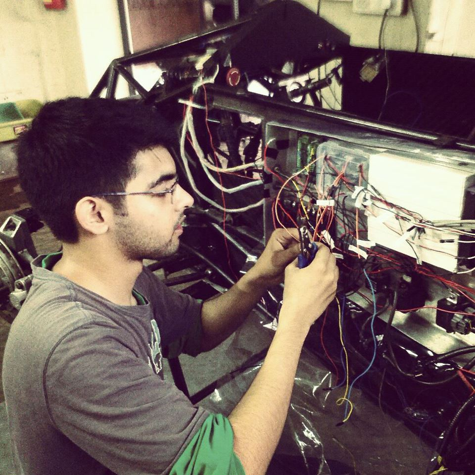Sometimes things would work perfectly on the test bench but fail under dynamic conditions. These were stressfull times as the whole team would be waiting on you troubleshooting your part.
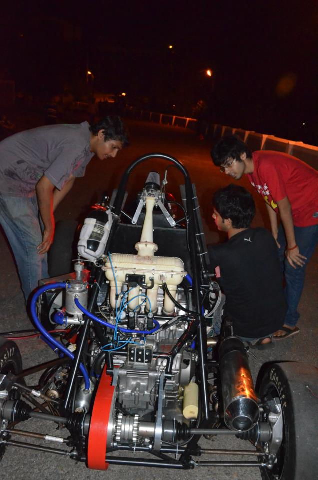But when you got things working, the feeling of elation was extraordinary.
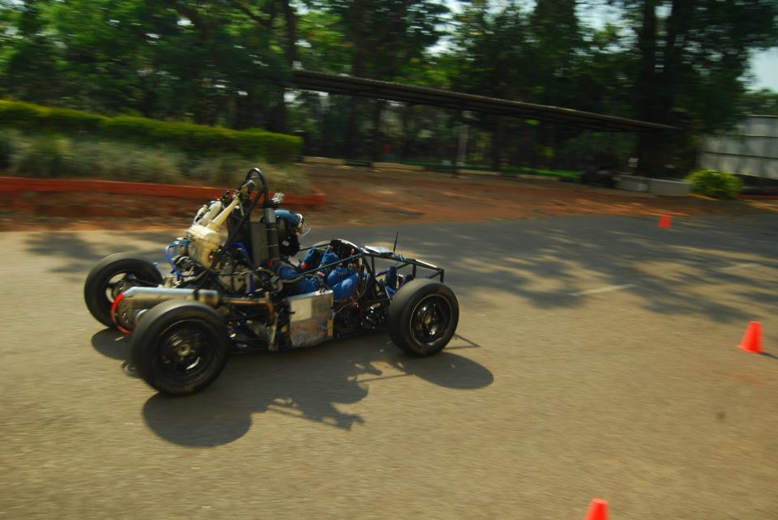 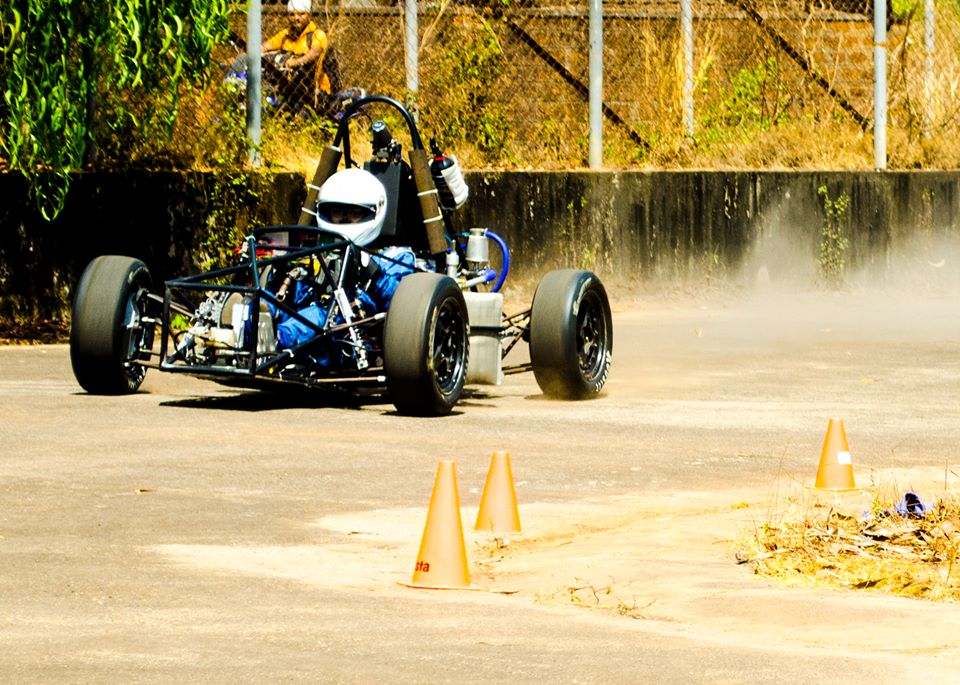Before heading over to Germany and Czech Republic for the Formula Student competitions, University of Applied Science, Graz were kind enough to offer thier track for two weeks of testing in Austria. Looking back those two weeks in Austria were crucial in our success in the competitions to follow. We carried out all sorts of test and tweaked the system to perfection. This is a picture of us trying out a flat shifting configuration for the acceleration test.
At the competition
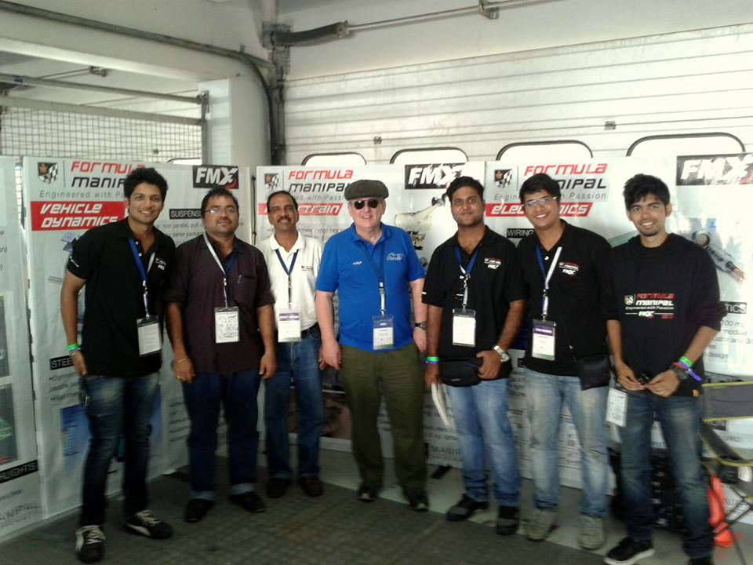Second place for cost analysis :)
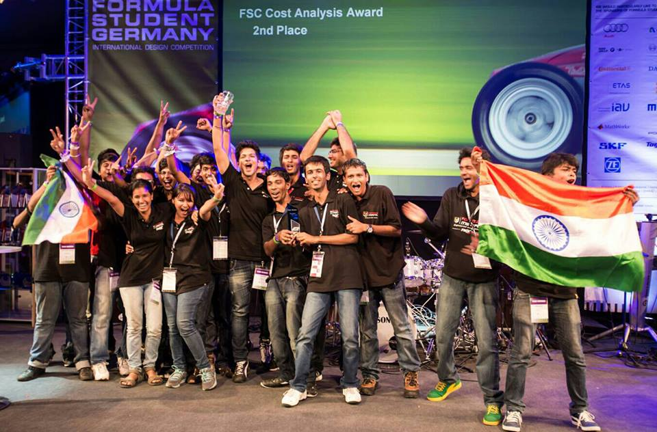The spirit of Formula Student was very strong indeed !
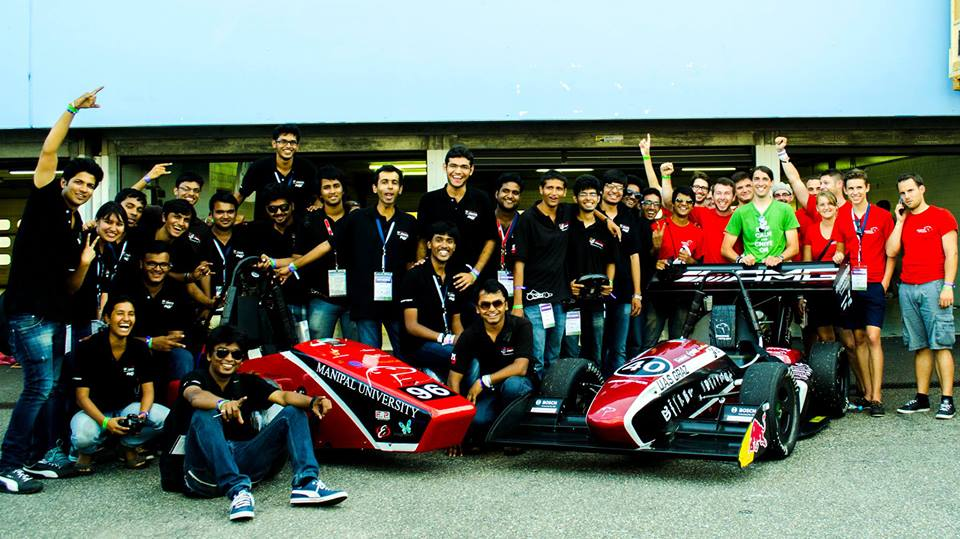Toradex Challenge - Home Automation
Teamed up with Udayan Sinha to develop a Home automation system to compete in the Toradex Design challenge. This was also our senior design project. The goal was to develop a scalable home automation solution to tackle the security and energy
issues with homes in India. Our initial design offer was accepted by Toradex and we received funding in the form of a powerful, NVIDIA Tegra 2 based, Colibri T20 Single Board Computer.
Our thinking ? With the IoT revolution just around the corner, it is high time we move towards widespread adoption of such a system. The following is a representation of out initial architecture.
While Zigbee is a good choice for our application, it was too expensive. We decided to go with the low cost nRF24L01+ 2.4GHz RF transceivers by Nordic Semiconductors. With plenty of documentation and tutorials available for it, we easily got an Arduino and a PIC MCU communicating with each other wirelessly.
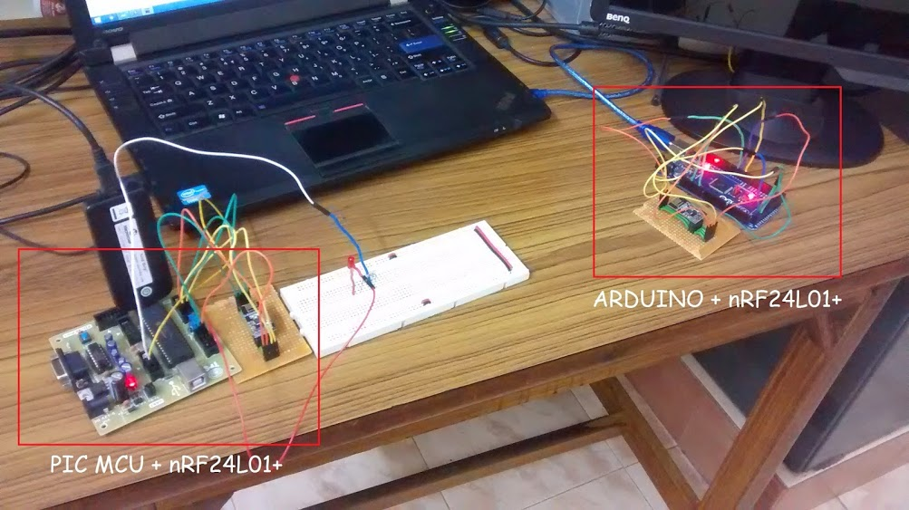The PIC MCU sends data to the Arduino which displays it on the serial monitor of the Arduino IDE.
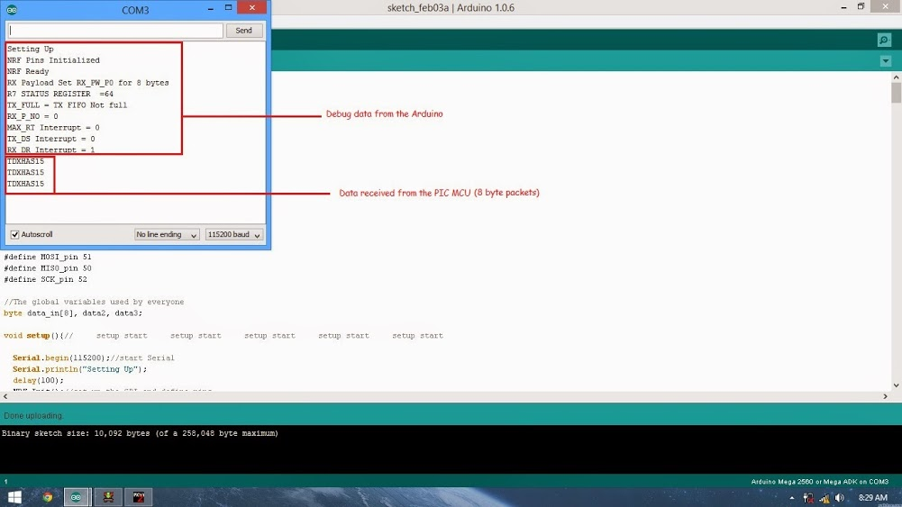We designed the display module (using our trusted PIC18F4550). As usual our Arduino test jig sent messages and we checked for the correct responses from the module.
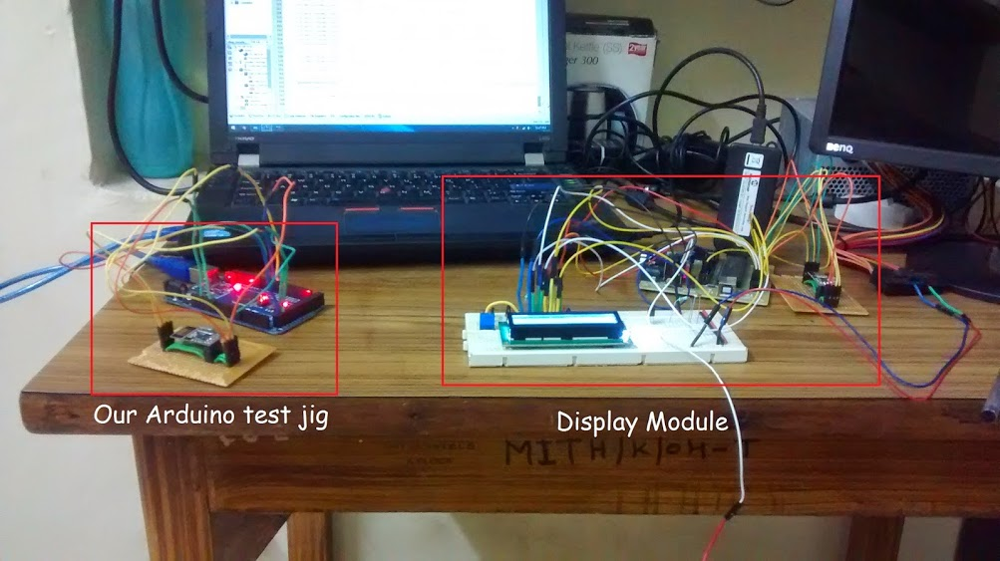The time and weather data was displayed on the LCD as shown below.

Next, we wrote python scripts for the raspberry pi and the colibri T20. We used Tkinter, a GUI library for python to develop an application that could let the user turn on/off a particular appliance in a particular room. For the colibri, we used the API provided by weather.com to collect data from the cloud and send it to the display module to be displayed.
We couldnt finish all aspects of the project due to time constraints, but we managed to demonstrate a pretty kick-ass product. Below is a snap from our design presentation.
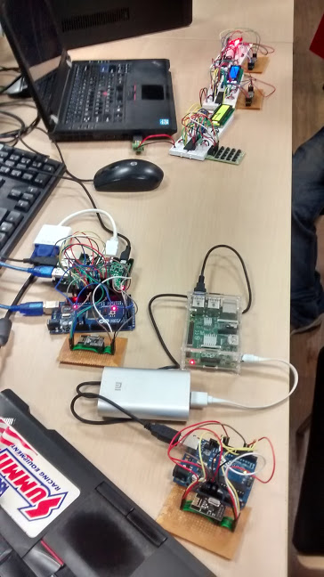Jitsi Meets IOS
An ongoing project part of EC500C1 coursework. The big idea is to bring JitsiMeet to IOS users. JitsiMeet is an online in-browser video conferencing tool that combines the powerful Jitsi video bridge MCU
with the HTML5 WebRTC API to provide a secure, plugin-free conferencing tool. We have been tasked by the Jitsi team to port JitsiMeet to the IOS platform. This is a very interesting project as I’m applying Google’s WebRTC API with my own
signalling protocol as there are no restriction to use a particular signalling framework (SIP, XMPP).
Our plan is to first develop the client and server that can establish a peer connection with other clients via our signalling protocol. Once we have a working system we will port it to IOS using Apple’s Swift language.
We will be using Node.js for the server and Sockets for the signalling.
Real Time Temperature
An ongoing project part of EC544 coursework. Challenge was to program motes to sense and communicate ambient temperature to a central server that collects data from the motes and graphs it on a webpage. An arduino uno was used to sense data
and Xbee was interfaced to communicate the data to the server. On the server side, the Node.js platform was utilised to collect information from the serial port and send the temp data to the client using sockets. Once the data reached
the client the Digraph charting library was used to make elegant looking graphs. One of the advantage of building on the Node platform is that we could utilise some awesome packages such as Express, http, socket.io and serial port which
made life a lot more beautiful.
Here is a snapshot during a test to see the accuracy of the charting library.

..and a video I took while testing out the historical chart.